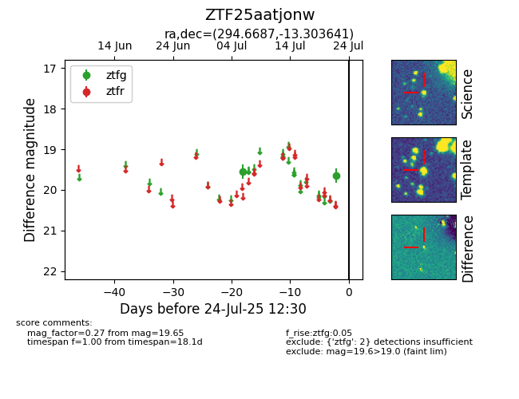

Target ZTF25aatjonw at 2025-07-24 12:30, see:
FINK: fink-portal.org/ZTF25aatjonw
Lasair: lasair-ztf.lsst.ac.uk/objects/ZTF25aatjonw
ALeRCE: alerce.online/object/ZTF25aatjonw
alt names
ZTF25aatjonw (ztf,fink)
coordinates:
equatorial (ra, dec) = (294.6687,-13.30364)
galactic (l, b) = (26.1085,-16.39023)
photometry
last ztfg=19.65
2 ztfg detections
